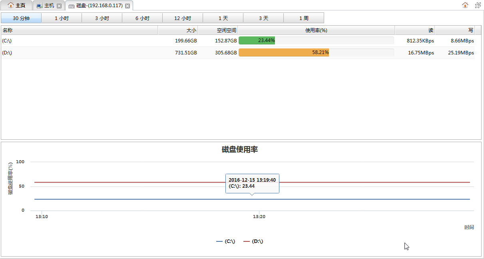

从主机监控面板的主机列表的操作下拉菜单中点击磁盘分析可以打开主机磁盘分析面板，该页面用于查看主机磁盘的使用情况。如下图所示:

时间按钮
点击按钮可以切换查看最近各个不同时间段内的主机磁盘使用情况。
主机磁盘信息列表
列表中为当前收集到的最新的磁盘监控信息。
| 字段 | 说明 |
|---|---|
| 名称 | 磁盘名称或路径。 |
| 大小 | 磁盘总空间大小。 |
| 空闲空间 | 磁盘空闲的空间大小。 |
| 使用率 | 磁盘的使用率。使用率以进度条形式展现，并用了不同颜色来标识不同范围的使用率。 红色：80%以上；橘色：50%以上；绿色：50%以下; |
| 读 | 磁盘读取速率。 |
| 写 | 磁盘写入速率。 |
主机磁盘使用率图表
图表反映了最近一段时间内各个磁盘使用情况。每条曲线代表一个磁盘的使用率。横坐标是时间，纵坐标是磁盘使用率。